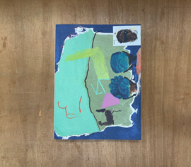
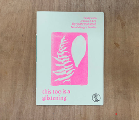
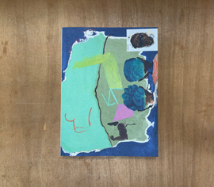
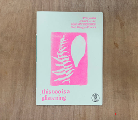

The design process for this website documented
I look forward to seeing if these wireframes materialize with the addition of CSS.


Aesthetically I am drawing inspiration from "Zines". I want the website to have the essence of physical media. I am particularly interested in the style of collages and screen printing and would like my website to have that essence.
 



I would like almost every part of the website to be accessible from any other part of the website.

I want the structure and feel of the site to be quite grungy and harsh and therefore I am opting for a softer font.

The following colours are under consideration: